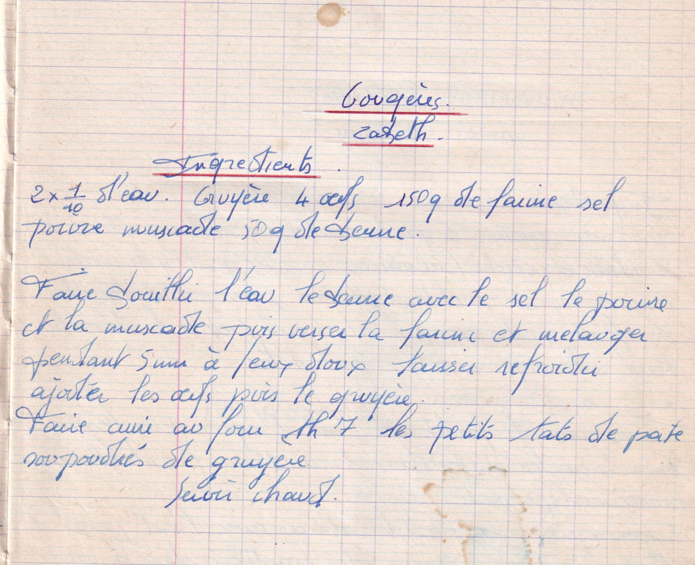

Gougères
Zabeth

LISTE DES INGREDIENTS
- 2*1/10 d'eau
- Gruyère
- 4 oeufs
- 150gr de farine
- Sel Poivre Muscade
- 50gr de beurre
PREPARATION
- Faire bouillir l'eau le beurre avec le sel le poivre et la muscade
- Puis verser la farine et mélanger pendant 5min à feu doux
- Laisser refroidir
- Ajouter les oeufs puis le gruyère
- Faire cuire au four th7 les petits tas de pate saupoudrés de gruyère
- Servir chaud